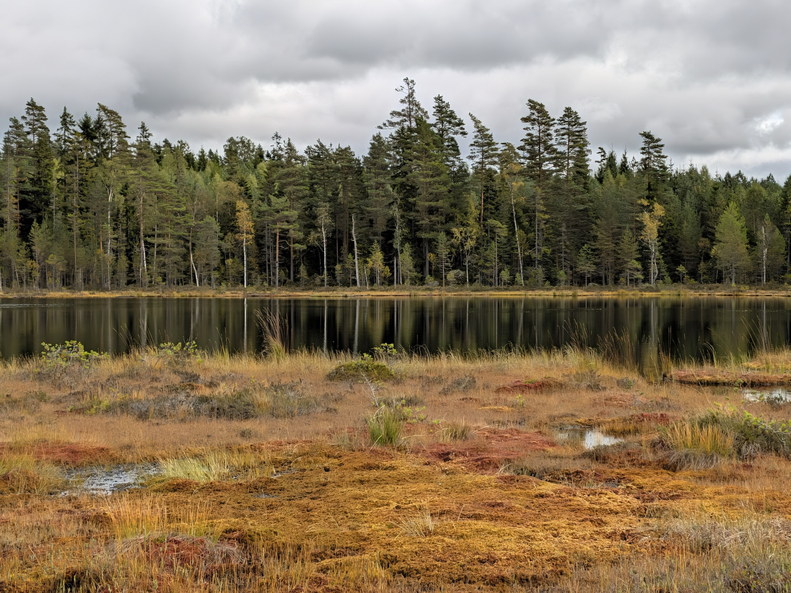
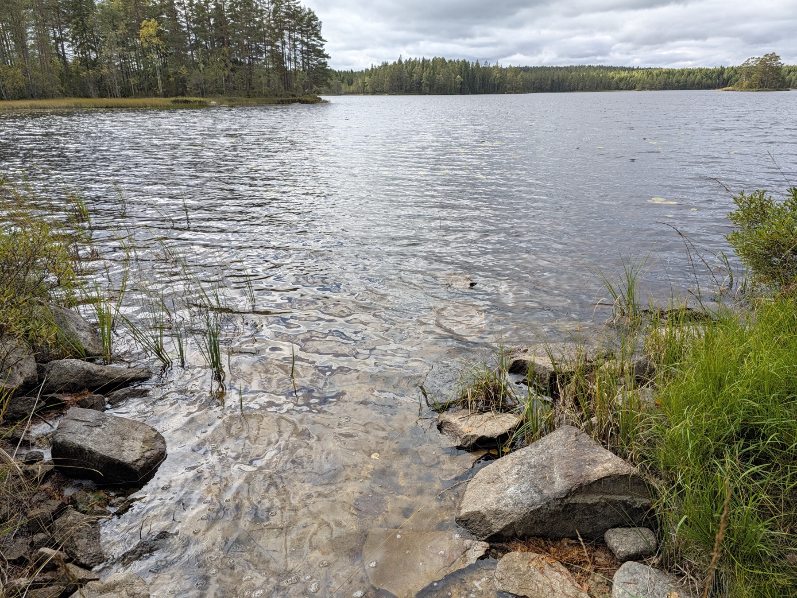
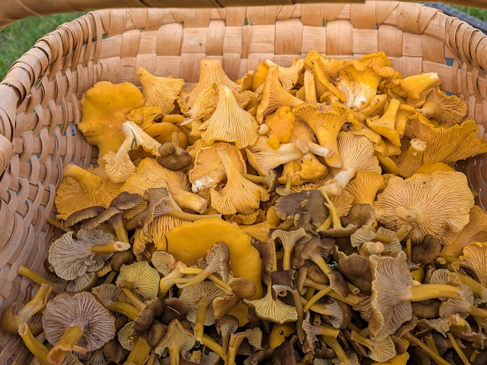
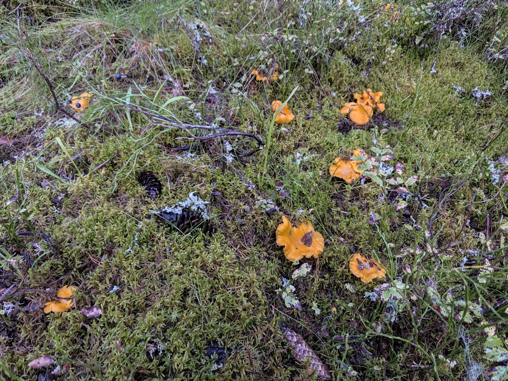
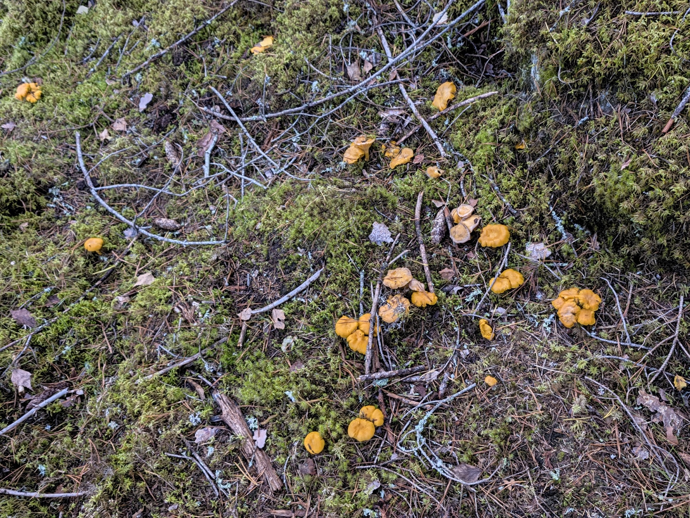

Påläst guidning
Vi letar svamp tillsammans och pratar AI på ett sätt som går att förstå. Du frågar. Vi resonerar. Vi tittar närmare.

HÖST I SILICON VÄSE / MED ANNA PÅ AiNNOVA
Fyra timmar i skogen. Dina företagsfrågor.
Och plats för något annat än fler måsten.
TA MED DET SOM SNURRAR
Du driver företag. Du försöker hinna med, fatta kloka beslut och förstå vad all den där AI:n egentligen kan göra för dig. Det tar energi.
Följ med mig ut i skogen. Vi letar svamp och pratar om det som ligger på ditt bord. Vad dränerar dig? Vad vill du bygga? Vad kan maskinen ta hand om, och var behövs ditt eget omdöme?
Du behöver inte ha en färdig fråga. Ta med det du grubblar på. Vi börjar där.

MITT KONFERENSRUM HAR LITE BÄTTRE UTSIKT.DIN GUIDE, I SKOGEN OCH I TEKNIKEN
En skapligt påläst fysiker, mönsterigenkännare och AI-byggare i det jag brukar kalla Silicon Väse.
Jag funderar över vart teknikjättarna för oss — och hjälper dig med det som ligger på ditt bord. Vi kan prata om de stora teknikbolagens makt och din lilla firmas hemsida under samma promenad. Båda hör till verkligheten.
Jag bygger själv med AI. En stor del av nyttan börjar med att förstå vad som går att beställa, vad som är värt att göra och vilka krav du ska ställa.
Vi behöver inte sitta inne för att tänka framåt.
FYRA TIMMAR SOM ÄR DINA
Vi letar svamp tillsammans och pratar AI på ett sätt som går att förstå. Du frågar. Vi resonerar. Vi tittar närmare.
Vi tar oss an det som krånglar och undersöker var tekniken kan avlasta, vad du behöver behärska och vad du kan be om hjälp med.
Du får konkreta förslag på nästa steg. Behöver en webbsida, ett verktyg eller en annan lösning byggas, kommer vi överens om det separat.
PACKA FÖR MÖJLIGHETER
En för de gula kantarellerna. En för trattkantarellerna. Och en liten extra påse för allt det andra vi ramlar över.
Vi går ut med plats för fynd. Vad som följer med hem avgör skogen.
Och kepsen, förstås. Vi stämmer av plats och upplägg när vi bokar.
Du ordnar maten. Jag står för guidningen. Bjud mig på något du tycker om. Jag äter allt — i matsäcken.
Stora frågor, små bekymmer och idéer som inte vill släppa.



EN HALVDAG MED ANNA
För dig som driver företag och vill få både frisk luft och ett påläst bollplank. Vi hittar en dag och en plats i skogarna kring Väse tillsammans.
Samma tid, samma engagemang och samma pris. Svampen får du ordna själv.
FYRA TIMMAR · DINA FRÅGOR
För dig. Med Anna.
Samtliga priser exklusive moms.
Ring Anna och boka ↗Kontakta mig via ainnova.se ↗Vi kommer överens om datum och upplägg innan bokningen är klar. Matsäck tar du med. Eventuellt byggarbete offereras separat.